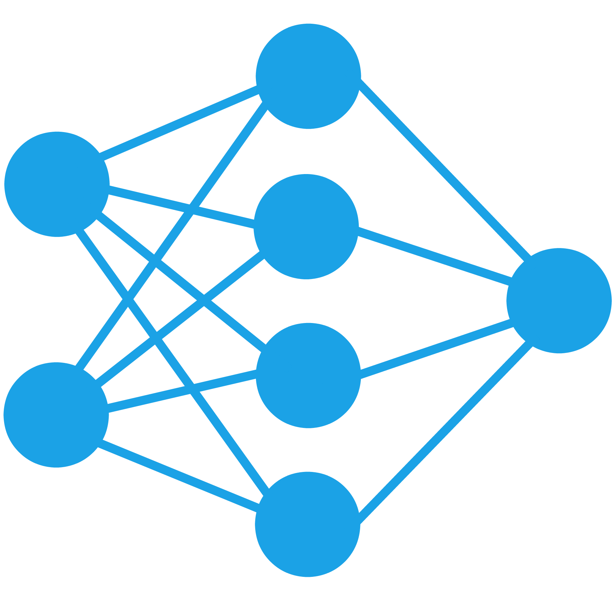
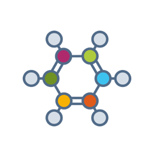

cyz_- Resume
Summary
Hey there, my name is Charley. I am a software developer and an aspiring machine learning engineer who recently graduated from UCSD. I built this website so I could have a place to showcase my projects and share other random experiences. In my free time, I love learning about new programming tools and tackling projects. I also enjoy sports and experiencing the great food (and boba) here in the Bay Area. Hope you find something interesting and enjoy!
Interests
Professional
- Building Practical Software
- Backend Development
- Java Applications
- Deep Learning
- Computer Vision
- Teaching/Tutoring
Other
- Snowboarding
- Bowling
- Basketball
- Volleyball
- Poker
- Food
Projects
My previous and ongoing work.
Sort By:
Current Projects
Handwriting To Latex Converter
Tags: Machine Learning, Computer Vision, Mobile Application
The goal is to build an application that converts handwritten mathematical equations and scientific symbols into a much neater latex representation. However, unlike other available converters, my application will allow you to make changes to the latex image either by adding more handwritten characters directly to the latex image or by scribbling out certain parts of the image to remove equation components. It will also have a selection feature to easily move equation components around using drag and drop. I believe this will be an invalubale tool in note-taking applications, especially for STEM students.
Past Projects
Personal Website - [code]
Winter 2017-2018
Tags: Web Development, HTML5, CSS3, Vanilla Javascript
Using only vanilla JS, HTML, and CSS (without libraries), I wanted to finally learn about the core architecture and inner-workings of web technologies to build my personal site and also use these skills for future web projects.
State-Of-The-Art Diamond Price Predictor - [report]
Fall 2017
Tags: Machine Learning, Data Science, Web Mining
This project earned the award for best final projects in my web mining and recommender systems class. From a Kaggle dataset that contains data on over 50,000 diamonds and their various properties, we used data analytics, neural networks, fine-tuning, and various optimizations to obtain state-of-the-art price predictions (99.24 R2 score). You can read more about this project in the link to the final report above.

Biomedical Image Registration and Segmentation - [more info]
Summer 2017
Tags: Deep Learning Research, Computer Vision, Convolutional Neural Networks, Boundary Refinement
In this research project, I worked with Professor Danny Chen at the University of Notre Dame on cutting edge methods to improve semantic image segmentation (i.e. identifying which pixels belong to which object in an image) via convolutional networks on a dataset of wing-pouch frames provided by a research group in the biology department. I was able to develop a new segmentation architecture while using boundary refinement post-processing to achieve significant improvements over the previous state-of-the-art. If you want more details, check out the more-info link above.
JVM Memory Leak Predictor
Winter 2016-2017
Tags: Java Virtual Machine, Java Garbage Collector, Data Analytics
During my software internship at Huawei Technologies, I made an application that used JVM garbage collection data to predict memory leak instances in a testing system's environment. My program used patterns in execution data to make accurate predictions and identify probable memory leak slots. This feature was later integrated into a system-wide diagnostic program to detect abnormal memory events.
Android Application: dev.net
Fall 2016
Tags: Java, Android Mobile Application
I worked in a team of 6 to build a platform that connects developers who are looking for work with clients who are seeking programmers to implement their ideas. Our app allows developers to quickly search for relevant projects, apply for and contribute to them, and effectively communicate with clients.
Full Stack iOS Application: Siren
Summer 2016
Tags: Swift, iOS Mobile Application
In this personal project, I created a mobile marketplace for users to buy/sell items. The distinguished feature of my app: it would alert users of relevant (or wish-list category) items that are posted and allow sellers to expedite the selling process with smart searches based off of consumer interest and action history. No popular open marketplaces for college students to buy and sell a wide range of items had this functionality.
UCSD IEEE Micromouse Lead Programmer
Spring 2016
Tags: Embedded Systems, C
While working with the UCSD Micromouse team, I designed a new architecture to hold maze data that allowed for faster maze traversal and better navigation. From this new system, I was able to implement improved algorithms that cut the traversal time of our mouse in zig-zagging sections of the maze by over 30% which led to significant improvements in overall performance.
CPU Data Analyzer and Usage Predictor
Summer 2014
Tags: Java, Hardware-Testing
This was my first big software project in industry and was completed during my first internship at Huawei Technologies. I wrote a Java program that took in large CPU dump files, analyzed the thread data, and outputted the predicted list of threads that would use the most CPU resources. This program was part of a larger application that focused on automated troubleshooting.

Improved Synthesis of Anti-Cancer Drug YD-3 - [Intel STS Paper] [Chemical Science Submission]
2013
Tags: Organic Chemistry Research
Under the guidance of postdoc Dr. Mengchun Ye at the Scripps Research Institute, I designed an innovative method that drastically improved the synthesis of an anticancer drug, YD-3, using novel arylation techiques. From my method (which achieved 96.6% final yield), I authored a paper that later won the Intel Science Talent Search semifinalist and Siemens Competition in Math, Science, and Technology semifinalist awards (see the Intel STS Paper link). My work also benefited a larger project about similar processes and was included in a paper that was later published in the prestigious Chemical Science journal (see the Chemical Science Submission link).
Contact
My resume and contact information.
Preferred Contact
Feel free to email me if you have any comments, suggestions, concerns, or questions regarding anything here. Any feedback about this site or any of my projects will be appreciated :).
chazhang0310@gmail.com
Resume
Machine Learning Resume -
Download PDF

Software Engineering Resume -
Download PDF